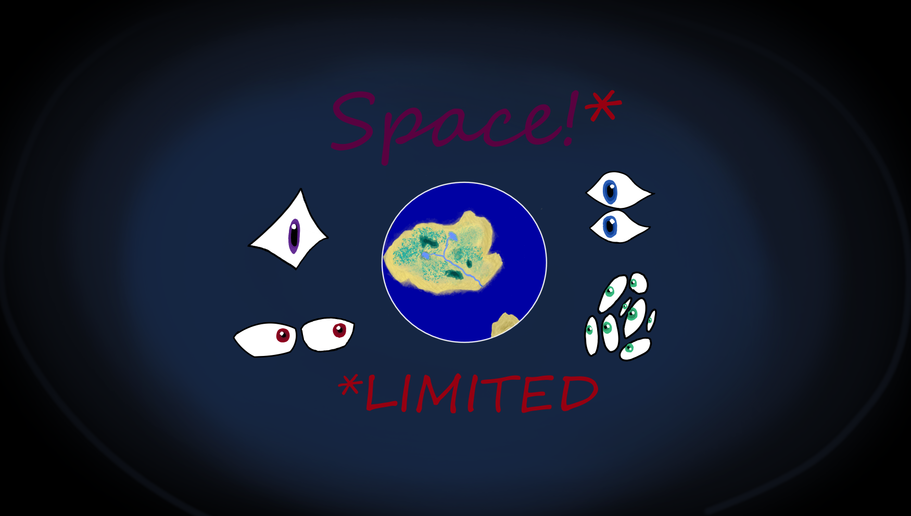

Space Limited

preface: In the Gradglass galaxy, Standard Space Year 4053, overcrowding has driven the strongest factions into the most remote reaches of the galaxy. These factions include Bramble Kin, The Pet Rocks, The Blobs, and The Avian Alliance. Your faction has developed a technology that allows you to go further than any ship has ever gone before. Unfortunately, three other factions had the same plan. The race to colonize the edge of the galaxy has begun.